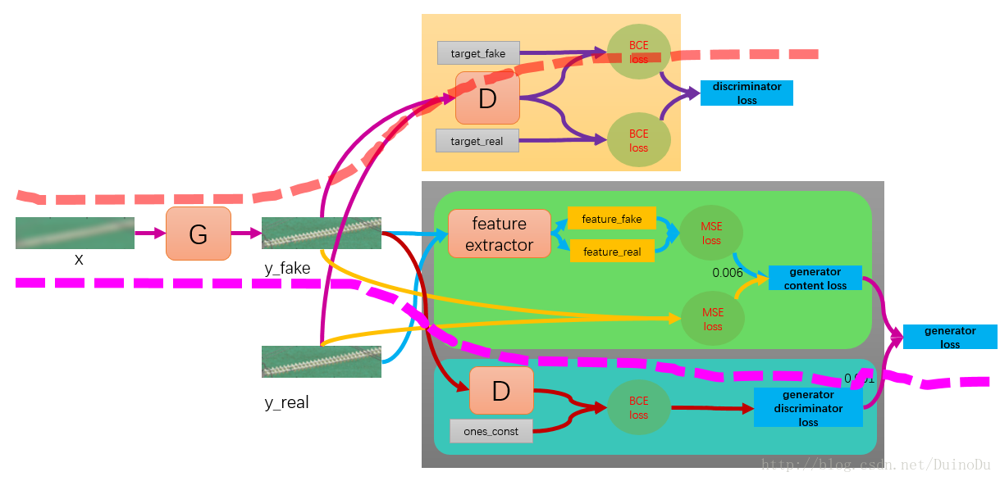

通过采样等方式获取高清图片的低分辨率版本，两者形成一一映射的关系，作为准备好的数据集。
不同于之前的GAN的输入为noise，SRGAN 的输入为低分辨率图片，希望通过对抗的方式学习如何生成低分辨率图片的超清版本。
主要改动的地方除了生成器和判别器的架构外，就是损失函数了：判别器的损失函数无需改动，而生成器的损失函数在原来的基础上，需要再增加两项，一个是真实图片与生成图片的均方误差，另一个是真实图片与生成图片经过vgg19提取得到的特征之间的均方误差（论文中把这两个合起来叫做内容损失，而之前生成器的损失叫做对抗损失，内容损失+对抗损失=感知损失）。

代码 导入相关函数 1 2 3 4 5 6 7 import tensorflow as tfimport matplotlib.pyplot as pltimport numpy as npfrom tensorflow.keras import layersimport scipyfrom glob import globimport datetime
准备数据 1 2 3 4 5 6 7 8 9 10 11 12 13 14 15 16 17 18 19 20 21 22 23 24 25 26 27 28 29 30 31 32 33 34 35 36 37 38 39 40 41 42 43 44 45 46 47 class DataLoader (): def __init__ (self, dataset_name, img_res=(128 , 128 ): self.dataset_name = dataset_name self.img_res = img_res def load_data (self,is_testing=False ): data_type = "train" if not is_testing else "test" path = glob(r'C:\Users\fanxi\Desktop\%s\*' % (self.dataset_name)) imgs_hr = [] imgs_lr = [] for img_path in path: img = self.imread(img_path) h, w = self.img_res low_h, low_w = int (h / 4 ), int (w / 4 ) img_hr = scipy.misc.imresize(img, self.img_res) img_lr = scipy.misc.imresize(img, (low_h, low_w)) if not is_testing and np.random.random() < 0.5 : img_hr = np.fliplr(img_hr) img_lr = np.fliplr(img_lr) imgs_hr.append(img_hr) imgs_lr.append(img_lr) imgs_hr = np.array(imgs_hr,dtype=np.float32) / 127.5 - 1. imgs_lr = np.array(imgs_lr,dtype=np.float32) / 127.5 - 1. BATCH_SIZE=256 BUFFER_SIZE=len (imgs_hr) datasets=tf.data.Dataset.from_tensor_slices((imgs_hr,imgs_lr)) datasets=datasets.shuffle(BUFFER_SIZE).batch(BATCH_SIZE) return datasets def imread (self, path ): return scipy.misc.imread(path, mode='RGB' ).astype(np.float ) data_loader=DataLoader('test' ) datasets=data_loader.load_data()
构建VGG 1 2 3 4 5 6 7 8 9 class BuildVGG (tf.keras.models.Model ): def __init__ (self ): super ().__init__() vgg=tf.keras.applications.VGG19(weights='imagenet' ) vgg.outputs=[vgg.layers[9 ].output] def call (self,img ): img_features=vgg(img) return img_features
搭建生成器和判别器网络 1 2 3 4 5 6 7 8 9 10 11 12 13 14 15 16 17 18 19 20 21 22 23 24 25 26 27 28 29 30 31 32 33 class Discriminator_model (tf.keras.Model ): def __init__ (self ): super ().__init__() self.df=64 self.dense1=layers.Dense(self.df*16 ) self.leakyrelu=layers.LeakyReLU() self.dense2=layers.Dense(1 ,activation='sigmoid' ) def d_block (self,layer_input,filters,strides=1 ,bn=True ): d=layers.Conv2D(filters,kernel_size=3 ,strides=strides,padding='same' )(layer_input) d=layers.LeakyReLU(alpha=0.2 )(d) if bn: d=layers.BatchNormalization(momentum=0.8 )(d) return d def call (self,img,training=True ): x=self.d_block(img,self.df,bn=False ) x=self.d_block(x,filters=self.df,strides=2 ) x=self.d_block(x,filters=self.df*2 ) x=self.d_block(x,filters=self.df*2 ,strides=2 ) x=self.d_block(x,self.df*4 ) x=self.d_block(x,filters=self.df*4 ,strides=2 ) x=self.d_block(x,filters=self.df*8 ) x=self.d_block(x,filters=self.df*8 ,strides=2 ) x=self.dense1(x) x=self.leakyrelu(x) validity=self.dense2(x) return validity
1 2 3 4 5 6 7 8 9 10 11 12 13 14 15 16 17 18 19 20 21 22 23 24 25 26 27 28 29 30 31 32 33 34 35 36 37 38 39 40 41 42 43 44 45 46 47 48 49 50 51 52 53 54 55 56 57 58 59 60 61 62 63 64 65 class Generator_model (tf.keras.Model ): def __init__ (self ): super ().__init__() self.n_residual_blocks=16 self.c1=layers.Conv2D(64 ,kernel_size=9 ,strides=1 ,padding='same' ) self.relu=layers.ReLU() self.c2=layers.Conv2D(64 ,kernel_size=3 ,strides=1 ,padding='same' ) self.bn=layers.BatchNormalization(momentum=0.8 ) self.add=layers.Add() self.c3=layers.Conv2D(3 ,kernel_size=9 ,strides=1 ,padding='same' ,activation='tanh' ) def residual_block (self,layer_input,filters ): d=layers.Conv2D(filters,kernel_size=3 ,strides=1 ,padding='same' )(layer_input) d=layers.Activation('relu' )(d) d=layers.BatchNormalization(momentum=0.8 )(d) d=layers.Conv2D(filters,kernel_size=3 ,strides=1 ,padding='same' )(d) d=layers.Add()([d,layer_input]) return d def deconv2d (self,layer_input ): u=layers.UpSampling2D(size=2 )(layer_input) u=layers.Conv2D(256 ,kernel_size=3 ,strides=1 ,padding='same' )(u) u=layers.Activation('relu' )(u) return u def call (self,img_lr,training=True ): r=self.c1(img_lr) r=self.relu(r) x=self.residual_block(r,64 ) for _ in range (self.n_residual_blocks-1 ): x=self.residual_block(x,64 ) x=self.c2(x) x=self.bn(x) x=self.add([x,r]) for _ in range (2 ): x=self.deconv2d(x) x=self.c3(x) return x
定义损失函数 再把这张图搬过来
共discriminator_loss、generator_content_loss、generator_adversarial_loss三种loss，第一个用来训练判别器，后两个加起来，训练生成器。
训练流程：
沿着红色虚线，计算判别损失，更新判别器参数Dθ
沿着粉色虚线，计算产生损失，更新产生器参数Gθ
1 2 cross_entropy=tf.keras.losses.BinaryCrossentropy(from_logits=False ) mse=tf.keras.losses.MeanSquaredError()
1 2 3 4 5 def discriminator_loss (real_out,fake_out ): real_loss=cross_entropy(tf.ones_like(real_out),real_out) fake_loss=cross_entropy(tf.zeros_like(fake_out),fake_out) return real_loss+fake_loss
1 2 3 4 5 6 7 8 9 10 11 def generator_loss (fake_out,img_real,img_fake ): adversarial_loss=cross_entropy(tf.ones_like(fake_out),fake_out) fea_img_real=vgg(img_real) fea_img_fake=vgg(img_fake) content_loss=mse(fea_img_real,fea_img_fake)*0.006 + mse(img_real,img_fake) return adversarial_loss+content_loss
定义优化器 1 2 generator_opt=tf.keras.optimizers.Adam(1e-4 ) discriminator_opt=tf.keras.optimizers.Adam(1e-4 )
设置超参数，实例化生成器和判别器 1 2 3 4 5 EPOCHS=100 vgg=BuildVGG() vgg.trainable=False generator=Generator_model() discriminator=Discriminator_model()
定义每个batch的训练过程 所有操作都是对于一个批次的全部样本”同时”进行的
1 2 3 4 5 6 7 8 9 10 11 12 13 14 15 16 17 18 19 20 21 22 def train_step (imgs_hr,imgs_lr ): with tf.GradientTape() as gen_tape,tf.GradientTape() as disc_tape: real_out=discriminator(imgs_hr,training=True ) imgs_sr=generator(imgs_lr,training=True ) fake_out=discriminator(imgs_sr,training=True ) gen_loss=generator_loss(fake_out,imgs_hr,imgs_sr) disc_loss=discriminator_loss(real_out,fake_out) gradient_gen=gen_tape.gradient(gen_loss,generator.trainable_variables) gradient_disc=disc_tape.gradient(disc_loss,discriminator.trainable_variables) generator_opt.apply_gradients(zip (gradient_gen,generator.trainable_variables)) discriminator_opt.apply_gradients(zip (gradient_disc,discriminator.trainable_variables))
定义生成图片的展示函数 1 2 3 4 5 6 7 8 9 10 11 12 13 14 15 16 17 18 19 20 21 22 23 24 25 26 27 28 29 30 31 32 33 34 35 def sample_images(epoch): os.makedirs('images' , exist_ok=True) r, c = 2, 2 imgs_hr, imgs_lr =[],[] for hr,lr in datasets.take(2): imgs_hr.append(hr) imgs.lr.append(lr) fake_hr = generator.predict(imgs_lr) # Rescale images 0 - 1 imgs_lr = 0.5 * imgs_lr + 0.5 fake_hr = 0.5 * fake_hr + 0.5 imgs_hr = 0.5 * imgs_hr + 0.5 # Save generated images and the high resolution originals titles = ['Generated', 'Original'] fig, axs = plt.subplots(r, c) cnt = 0 for row in range(r): for col, ione_batchmage in enumerate([fake_hr, imgs_hr]): axs[row, col].imshow(image[row]) axs[row, col].set_title(titles[col]) axs[row, col].axis('off') cnt += 1 fig.savefig("images/%d.png" % ( epoch)) plt.close() # Save low resolution images for comparison for i in range(r): fig = plt.figure() plt.imshow(imgs_lr[i]) fig.savefig('images/%d_lowres%d.png' % (epoch, i)) plt.close()
定义训练函数 1 2 3 4 5 6 def train (dataset,epochs ): for epoch in range (epochs): for imgs_hr,imgs_lr in dataset: train_step(imgs_hr,imgs_lr) sample_images(epoch)
开始训练 报错：
1 RecursionError: maximum recursion depth exceeded while calling a Python object
报错原因最后定位到了预训练模型vgg19
1 2 3 4 5 6 7 8 9 10 11 12 13 14 15 16 17 18 19 20 21 22 23 24 25 26 27 ----> 8 fea_img_real=vgg(img_real) 9 fea_img_fake=vgg(img_fake) 10 content_loss=mse(fea_img_real,fea_img_fake)*0.006 + mse(img_real,img_fake)#内容损失 D:\Anoconda\lib\site-packages\tensorflow\python\keras\engine\base_layer.py in __call__(self, *args, **kwargs) 966 with base_layer_utils.autocast_context_manager( 967 self._compute_dtype): --> 968 outputs = self.call(cast_inputs, *args, **kwargs) 969 self._handle_activity_regularization(inputs, outputs) 970 self._set_mask_metadata(inputs, outputs, input_masks) <ipython-input-6-69bcc14728ec> in call(self, img) 6 vgg.outputs=[vgg.layers[9].output] 7 def call(self,img):#输入的图像img有两种：生成的高分辨率图像(sr)和原来的高分辨率图像(hr) ----> 8 img_features=vgg(img) 9 return img_features ... last 2 frames repeated, from the frame below ... D:\Anoconda\lib\site-packages\tensorflow\python\keras\engine\base_layer.py in __call__(self, *args, **kwargs) 966 with base_layer_utils.autocast_context_manager( 967 self._compute_dtype): --> 968 outputs = self.call(cast_inputs, *args, **kwargs) 969 self._handle_activity_regularization(inputs, outputs) 970 self._set_mask_metadata(inputs, outputs, input_masks) RecursionError: maximum recursion depth exceeded while calling a Python object
暂时未解决，先放着。
参考资料 https://blog.csdn.net/DuinoDu/article/details/78819344
https://www.cnblogs.com/zgqcn/p/11260343.html